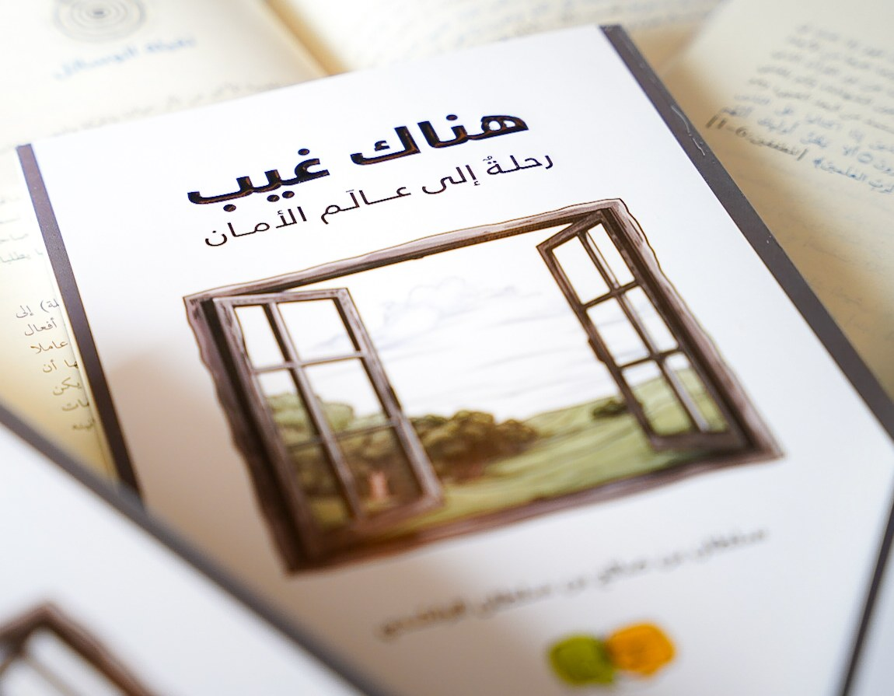

مؤسسة متخصصة في تعزيز الوعي المعرفيّ عند الشباب بوسائل متنوعة متجددة. A specialized institution advancing intellectual awareness among youth through diverse, ever-renewing methods.
وجهة الشباب الأولى في تنمية معارفهم وتعزيز إيمانهم. The youth's first destination for developing their knowledge and strengthening their faith.
صناعةُ مسارات متنوعة متكاملة؛ تُكسب الشباب شغف العلم وحب الدين. Crafting diverse, integrated pathways that instill in youth a passion for knowledge and love of faith.
17 جمادى الأولى 1442هـ الموافق 1 يناير 2021م. 17 Jumada al-Awwal 1442 AH — 1 January 2021.
من الإدارة إلى التعليم والإعلام والكتابة والمشورة — خمسة أوجه لنفس الرسالة.From administration to education, media, writing, and consulting — five faces of the same mission.
ثَمَّ أفنانٌ شتّى في إطار التعليم عندنا؛ فهناك دورات فكرية حضورية وافتراضية، وهناك برامج تعليمية ممتدة كصيف عوالم وفانوسها.Our education takes many forms — in-person and virtual courses, plus extended programs like Awalim Summer and Fanoosha.
لا يخلد العلم إلا بكتابته في السطور، فهنا تجدون إصدارات كتبنا الجديدة، ومساحة واسعة لكم لقراءة المقالات والمراجعات على الكتب.Knowledge only endures once written down — here you'll find our new releases and space to read articles and reviews.
تتابعون في إعلامِ عوالم حوارات معرفية مع ضيوف أكفاء، ومقاطع قصيرة تخاطب وعي الشباب، وأشياءَ أخرى تُكشف في حينها.Follow our media for in-depth conversations with capable guests and short clips that speak to youth awareness.
قد تعرضُ للشاب في طريقه نحو الخير تحدّياتٌ يودُّ لو أنه يجلس مع أحد فيها ليشير له بسديد القول، لا تخف نحنُ جميعا -في عوالم- معك.A young person's path toward good may bring challenges — don't worry, all of us at Awalim are with you.
كيف ندير؟How do we manage?
أضيفي وصفًا لطريقة عمل الفريق هنا.Add a description of the team's working method here.
بإجمالي 1,800+ ساعة تدريبية و600+ مشارك ومشاركة.1,800+ training hours across 600+ participants.
عبر مبادرة قراء عوالم — 17 كتابًا و20 جلسة نقاشية و150+ جائزة.Via Awalim Readers — 17 books, 20 sessions, 150+ awards.
أول إصدار مطبوع لعوالم، وثمرة مبادرة استكتاب عوالم بمشاركة نخبة من الباحثين — وكان ثاني أكثر كتاب مبيعًا في معرض الكتاب.Awalim's first printed title, born from the "Awalim Authors" initiative — the second best-selling book at the book fair.

بإشراف: شيخة الهنائيةLed by: Sheikha Al-Hinai
لكل برامج عوالم.Across all of Awalim's programs.
أضيفي إحصائية أو انطباعًا هنا.Add a statistic or an impression here.
هنا بعض الأرقام والإحصائيات عمّا أنجز في مؤسسة عوالم خلال السنوات السابقة.Some numbers and statistics on what Awalim Institution has accomplished over the past years.